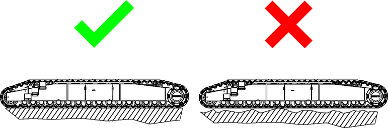

Fahrwerk bedienen

GEFAHR
Untergrund mit unbekannter Tragfähigkeit!
Kippen der Maschine.
Ausschließlich Untergrund mit bekannter Tragfähigkeit befahren. |
Bei Unklarheiten Liebherr-Kundendienst kontaktieren. |

GEFAHR
Unsachgemäßes Fahren auf Geländeneigungen!
Kippen der Maschine.
Einschränkungen beim Fahren auf Geländeneigungen beachten (Weitere Informationen siehe: „Fahren auf Geländeneigungen“). |

WARNUNG
Unsachgemäßes Verfahren der Maschine!
Schwere Verletzungen, Beschädigung der Maschine.
Maschine ausschließlich mit Hilfe eines Einweisers verfahren. |
ACHTUNG
Längere Fahrstrecken und Fahren auf Geländeneigungen!
Beschädigung der Fahrwerksgetriebe, der Hydraulikmotoren und der Laufrollen.
Längere Fahrstrecken und Geländeneigungen ausschließlich mit Geschwindigkeitsstufe 1 befahren. |
Sicherstellen, dass Getriebeölstand der Fahrwerksgetriebe ausreichend ist. |
Sicherstellen, dass maximal zulässige Belastungsdauer für Fahrwerksgetriebe, Hydraulikmotoren und Laufrollen eingehalten wird. |
ACHTUNG
Unsachgemäße Wasserdurchfahrt!
Beschädigung der Maschine.
Sicherstellen, dass Wasserdurchfahrt ausschließlich bei stehendem Gewässer erfolgt. |
Sicherstellen, dass Wassertiefe maximal bis zur Unterkante des Mittelteils reicht. |
Sicherstellen, dass Untergrund eben und fest ist. |
ACHTUNG
Unsachgemäßes Fahren mit eingestecktem Ladekabel!
Beschädigung des Ladekabels, Herausziehen des Ladekabels.
Wenn möglich: | |
Ladekabel ausstecken und aus dem Fahrbereich entfernen. | |
Wenn Ladekabel eingesteckt bleiben muss: | |
Ausschließlich Ladeanschluss am Raupenträger verwenden. | |
Ausschließlich mit Hilfe eines Einweisers fahren. |
Sicherstellen, dass Ladekabel nicht überfahren wird. |
Temperatur des Fahrwerksgetriebes | Maximal zulässige Belastungsdauer |
|---|---|
≤ 90 °C (194 °F) | Dauerhaft |
90.1 (194 ) bis 100 °C (212 °F) | Max. 10 min |
> 100 °C (212 °F) | Fahren ist unzulässig. |
Maximal zulässige Belastungsdauer für Fahrwerksgetriebe, Hydraulikmotoren und Laufrollen

Hinweis
Liebherr empfiehlt:
Um erhebliche Verringerung der Lebensdauer von Fahrwerk, Laufrollen, Kette und Raupenträger zu vermeiden: | |
Maschine ausschließlich auf geeignetem, ebenem Untergrund fahren. | |

Fig. 3773: Maschine ausschließlich auf geeignetem, ebenem Untergrund fahren
Fig. 3773: Maschine ausschließlich auf geeignetem, ebenem Untergrund fahren

Hinweis
Angegebene Bewegungsrichtungen gelten ausschließlich, wenn Fahrantriebe der Raupenträger hinten stehen!
Rückwärtsfahren (Leitrad hinten, Fahrantrieb vorne) verursacht aufgrund der höheren Spannungen in der Kette einen deutlich höheren Verschleiß.
Fahrtrichtung beachten. |
An den Pedalen sind Hebel angeschraubt. Die Bedienung der Hebel ist identisch mit der Bedienung der Pedale.
Sicherstellen, dass folgende Voraussetzungen erfüllt sind:
❑ | Einweiser steht zur Verfügung. |